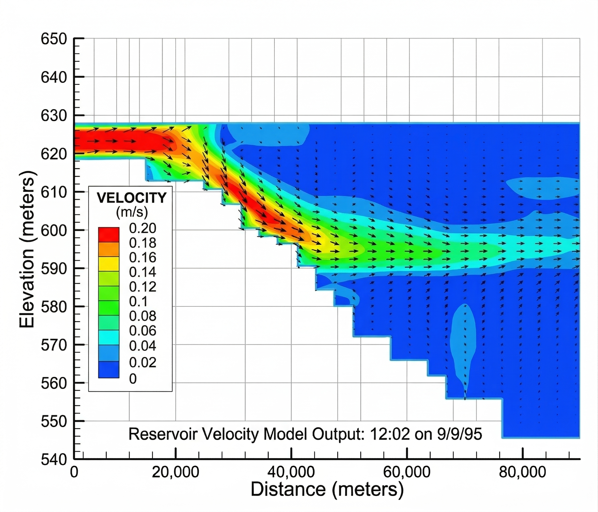
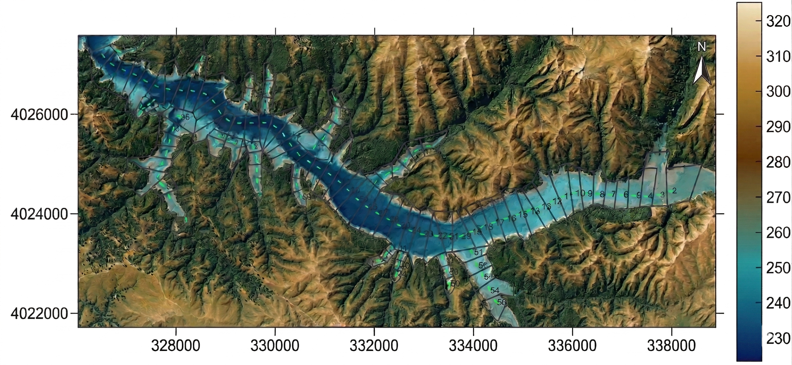
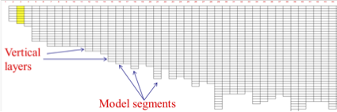

Introduction to CE-QUAL-W2¶
Overview¶
CE-QUAL-W2 is the U.S. Army Corps of Engineers' (USACE) two-dimensional, longitudinal/vertical, hydrodynamic and water quality model. The model assumes lateral homogeneity, making it best suited for relatively long and narrow waterbodies that exhibit longitudinal and vertical water quality gradients. CE-QUAL-W2 has been applied to rivers, lakes, reservoirs, estuaries, and combinations thereof, including entire river basins with multiple reservoirs and river segments.
What does CE-QUAL-W2 stand for?
The name CE-QUAL-W2 stands for Corps of Engineers - Quality - Width-Averaged 2D. CE-QUAL-W2 was originally developed at the U.S. Army Engineer Research and Development Center (ERDC). Since Version 3.0, Portland State University (PSU) has been a major CE-QUAL-W2 developer, as well as maintaining an active user community. ERDC resumed active development and maintenance of CE-QUAL-W2 in 2020, with research and development funding from the Ecosystem Management and Restoration Research Program (EMRRP) and Aquatic Nuisance Species Research Program (ANSRP). The ERDC V2026 release builds on the foundation of PSU's V4.5 codebase.
The USACE Hydrologic, Hydraulic, and Coastal (HH&C) Community of Practice (CoP) utilizes a specialized set of software engineering tools, primarily developed by the USACE Hydrologic Engineering Center (HEC) and the Engineer Research and Development Center (ERDC). These tools are used for modeling, planning, and designing water resource projects. The Software Engineering Technology (SET) program provides support for maintenance and support of these models. ERDC's responsibilities include user support, bug fixes, documentation, QA/QC, development of a new Graphical User Interface (GUI), annual training workshops, and new feature development.
Typical Applications¶
CE-QUAL-W2 is commonly applied to two broad categories of waterbodies:
- Stratified reservoirs where longitudinal and vertical gradients in temperature, dissolved oxygen, and nutrients are important. An example is Brownlee Reservoir on the Snake River at the Idaho-Oregon border, USA.
- River basins that may or may not include reservoir or lake-like pools. An example is the Tualatin River basin in Oregon, USA, where the model represents the mainstem river and its tributaries as a connected system of branches and waterbodies.
Stratified Reservoir Example¶
The figure below illustrates CE-QUAL-W2 predictions for Brownlee Reservoir. The model captures the plunging inflow of the Snake River as it enters the reservoir and moves downstream as an interflow at an intermediate depth.

River Basin Example¶
The figure below shows the layout of the Upper Tualatin River CE-QUAL-W2 model. This model was composed of 2 waterbodies (BR1--BR3 and BR4--BR5). The mainstem consisted of 2 branches (BR1 and BR4) spanning from River Mile (RM) 62.4 to RM 38.4. Three side branches represented Scoggins Creek (BR2), Gales Creek (BR3), and Dairy Creek (BR5).

Terminology¶
The CE-QUAL-W2 model discretizes a waterbody into a structured grid. The following terms define the components of that grid, from largest to smallest.
Waterbodies¶
A waterbody is a collection of model branches that share the same turbulence closure scheme, water quality parameter values, and meteorological forcing. For example, a model of a river-reservoir system would typically define the reservoir and the river as separate waterbodies, each with its own meteorological input and turbulence closure settings. A single reservoir can also be split into multiple waterbodies where different portions require distinct meteorological forcing.
Branches¶
A branch is a collection of model segments that share a common slope. In a river, separate branches represent reaches with different channel gradients. In a reservoir, sidearms are typically represented as separate branches connected to the mainstem branch.
Segments¶
A segment is a single longitudinal element of length Δx. Segment lengths can vary from segment to segment. Each segment is further divided vertically into layers.
Layers¶
A layer is a single vertical element of height Δz. Layer heights can vary between waterbodies. Within a segment, layers between the bottom elevation and the water surface are active (wet); layers above the water surface are inactive (dry). As the water surface rises or falls during a simulation, layers are added or removed at the top of the water column.
Summary of Grid Hierarchy¶
| Term | Definition | Typical Use |
|---|---|---|
| Waterbody | Collection of branches sharing turbulence closure, water quality parameters, and meteorological forcing | Reservoir and river as separate waterbodies; zones requiring different met stations |
| Branch | Collection of segments sharing a common slope | Mainstem channel, reservoir sidearms, tributaries |
| Segment | Longitudinal element of length Δx (variable) | Horizontal discretization; lengths typically 100--10,000 m |
| Layer | Vertical element of height Δz; active (wet) or inactive (dry) depending on water surface elevation | Vertical discretization; heights typically 0.1--5 m |
Grid Layout Example¶
The figures below illustrate the grid layout for Eucha Reservoir in Oklahoma, USA. This model uses a quasi-3D configuration by representing the reservoir sidearms as separate branches. Each segment contains multiple vertical layers to resolve the vertical structure of the water column.


Quasi-3D Modeling with Branches
Although CE-QUAL-W2 is a 2D (longitudinal/vertical) model, the use of multiple branches to represent sidearms and tributaries creates a quasi-3D representation of the waterbody. This approach is particularly effective for reservoirs with complex geometries where sidearms contribute significant inflows or exhibit distinct water quality conditions. However, a quasi-3D representation does not replace a true 3D model. In some cases, a fully 3D model may be necessary to resolve complex three-dimensional flow patterns.
Historical Background¶
The development of CE-QUAL-W2 is the result of the collective effort of many researchers over several decades. The model's development has its origin with the U.S. Army Corps of Engineers, and the name reflects that origin: CE (Corps of Engineers), QUAL (Quality), W2 (Width-averaged 2D).
Contributors
Many people have contributed to the model development. A partial list is shown in Appendix A: Contributors.
Version 1.0¶
The original model that served as the foundation for CE-QUAL-W2 was known as LARM (Laterally Averaged Reservoir Model), developed by Edinger and Buchak (1975, 1978, 1980, 1983). The first LARM application was on a reservoir with no branches. Subsequent modifications to allow for multiple branches and estuarine boundary conditions resulted in the code known as GLVHT (Generalized Longitudinal-Vertical Hydrodynamics and Transport Model). Addition of the water quality algorithms by the Water Quality Modeling Group at the Corps of Engineers Waterways Experiment Station (WES) resulted in CE-QUAL-W2 Version 1.0 (Environmental and Hydraulic Laboratories, 1986).
Version 2.0¶
Version 2.0 was the result of major modifications to the code to improve the mathematical description of the prototype and increase computational accuracy and efficiency. These changes were summarized in the Cole and Buchak (1995) User Manual. Numerous new capabilities were included in Version 2.0:
- An algorithm that calculated the maximum allowable timestep and adjusted the timestep to ensure hydrodynamic stability requirements were not violated (autostepping)
- A selective withdrawal algorithm that calculated a withdrawal zone based on outflow, outlet geometry, and upstream density gradients
- A higher-order transport scheme (QUICKEST) that reduced numerical diffusion (Leonard, 1979)
- Time-weighted vertical advection and fully implicit vertical diffusion
- Step function or linear interpolation of inputs
- Improved ice-cover algorithm
- Internal calculation of equilibrium temperatures and coefficients of surface heat exchange or a term-by-term accounting of surface heat exchange
- Variable layer heights and segment lengths
- Surface layer extending through multiple layers
- Generalized time-varying data input subroutine with input data accepted at any frequency
- Volume and mass balances to machine accuracy
- Sediment/water heat exchange
Version 3.0¶
Version 3.0 introduced additional improvements to the numerical solution scheme and water quality algorithms, as well as extending the utility of the model to provide state-of-the-art capabilities for modeling entire waterbasins in two dimensions. The new capabilities included:
- An implicit solution for the effects of vertical eddy viscosity in the horizontal momentum equation
- Addition of Leonard's ULTIMATE algorithm that eliminates over/undershoots in the numerical solution scheme
- Inclusion of momentum transfer between branches
- The ability to model multiple waterbodies in the same computational grid including multiple reservoirs, steeply sloping riverine sections between reservoirs, and estuaries
- Additional vertical turbulence algorithms more appropriate for rivers
- Additional reaeration algorithms more appropriate for rivers
- Variable vertical grid spacing between waterbodies
- Numerical algorithms for pipe, weir, and pump flow
- Internal weir algorithm for submerged or skimmer weirs
- Three algal groups
- Arbitrary constituents defined by a decay rate, settling rate, and temperature rate multiplier
- Nine inorganic suspended solids groups
- Dissolved and particulate biogenic silica
- Age of water
- Derived constituents such as total DOC, organic nitrogen, organic phosphorus, etc. that are not state variables
- A graphical pre/postprocessor
- Converted to FORTRAN 90/95 with dynamic array allocation, eliminating the need to recompile the code for each application
- User-defined evaporation models including the Ryan-Harleman model
Version 3.1¶
Version 3.1 introduced additional improvements to the numerical solution scheme and water quality algorithms, as well as extending the utility of the model for modeling entire waterbasins in two dimensions. The new capabilities included:
- Any number of user-defined arbitrary constituents defined by a decay rate, settling rate, and temperature rate multiplier that can include any number of:
- Conservative tracers
- Coliform bacteria
- Water age
- Contaminants
- Any number of user-defined phytoplankton groups
- Any number of user-defined epiphyton/periphyton groups
- Any number of user-defined CBOD groups
- Any number of user-defined inorganic suspended solids groups
- Dissolved and particulate biogenic silica
- Derived constituents such as total DOC, organic nitrogen, organic phosphorus, etc. that are not state variables
- Kinetic fluxes
- Graphical preprocessor
Version 3.2¶
Version 3.2 introduced additional improvements to the model. The new capabilities included:
- Internal code rewrite to reduce code size, simplify code maintenance, and improve model execution speed
- New screen display during model run-time allowing controlling processor usage, examining output variables, and stopping, starting and restarting a model run on the fly
- Addition of a new algorithm to estimate suspended solids resuspension as a result of wind-wave action
- Reorganization of the
graph.nptfile to allow more output control formatting possibilities - New turbulent kinetic energy-turbulent dissipation (TKE) turbulence closure model
Version 3.5¶
Version 3.5 introduced significant enhancements to the model. The new capabilities included:
- Addition of the macrophyte model of Berger and Wells (2008) with a user-defined number of species
- Addition of a zooplankton model with a user-defined number of species based on an updated version of the CE-QUAL-R1 model (Environmental Laboratory, 1995)
- Addition of a new focusing or settling velocity for sediments that accumulate in the first-order sediment model
- User-defined time-variable input of P and N associated with organic matter inputs
- Based on the above refinement, the organic matter fractions within the model now have variable stoichiometry for P and N
- The first-order sediment model also tracks C-N-P correctly and has a dynamic stoichiometry as it accumulates organic matter in the sediment
- CBOD groups now have a user-defined settling velocity
- A Monod formulation was implemented for the initiation of anaerobic processes and reduction of aerobic processes
Version 3.6¶
Version 3.6 is file-compatible with Version 3.5. The primary change is allowing the code to run on multiple processors. The following changes were made:
- The code has been rewritten into smaller subroutines to allow better code compilation and optimization
- The code has been revised with the goal of improving computational speed
- The code now has OpenMP commands embedded to allow for limited parallelization of some of the routines
- The TKE algorithm has been updated with new algorithms that match experimental tank data for kinetic energy and dissipation
- The roughness height of the water for correction of the vertical velocity wind profile is now a user-defined input, z₀
- The Windows user interface no longer uses Array Viewer
- Fixed error with algae/chlorophyll a ratio in the user manual and fixed the preprocessor
- Spreadsheet output improvements
- Preprocessor improvements
- For the generic constituent, added temperature dependence on 0th-order decay
- Added the kinetic flux rates to the TSR file output
- Revised the computation of the drag coefficient for low wind speeds
- The light extinction coefficient (in m⁻¹) is now included as an output variable in the TSR opt file
- A new option for output in the format required for Tecplot
- A new variable for determining the fraction of NO₃-N that is diffused into the sediments that becomes organic matter, or SED-N
- In V3.5 the model computed an average decay coefficient of the sediments based on what was deposited. The user now has the option to dynamically compute that decay rate or to have it fixed and controlled by the model user (
DYNSEDKvariable) - Added kinetic flux output that sums up fluxes for all cells of a waterbody
- The selective withdrawal algorithm computation was adjusted to more closely follow the Corps' model code SELECT
- Command-line working directory specification is now active for the preprocessor, GUI, and W2 Windows versions
Version 3.7¶
Version 3.7 is not file-compatible with Version 3.6 because of the addition of several new state variables. Many of the new features are accessed through additional control files separate from the main control file, w2_con.npt. The following changes were made:
- The model has been improved to handle river flow regimes with: initial water surface elevation computed from normal depth, initial non-zero velocity regime, trapezoidal or rectangular model segments, and two slopes per branch
- There is a new bathymetry file input format in comma-delimited format (CSV)
- Temperature and dissolved oxygen habitat volumes are now computed within the model for user-specified fish species
- There is a new automatic selection of a withdrawal port algorithm
- Since each BOD group can have a different BOD-P, BOD-C, and BOD-N stoichiometric equivalent, new state variables BOD-P, BOD-N, and BOD-C were added
- Environmental performance criteria were developed to evaluate time and volume averages
- The model now has a module for adding dissolved oxygen, such as hypolimnetic aeration, to specific locations
- The model has a dynamic pipe algorithm allowing a pipe to be turned ON or OFF over time
- The model also has a dynamic pump algorithm that allows dynamic parameters for water level control over time
- The maximum time step can now be set to interpolate its value over time
- The computation of the temperature at which ice freezes has been adjusted to account for salt water impacts
- New model output includes volume-weighted averages of eutrophication water quality variables and output for all individual withdrawals
Version 3.71¶
Version 3.71 is file-compatible with Version 3.7 but adds one new variable to the control file w2_con.npt. The following changes were made:
- New model input formats (free format) for many input files that were previously in fixed format, including: concentration input files, wind sheltering file, meteorological input file, vertical profile file, longitudinal-vertical profile file, withdrawal flow file, structure outflow file, and flow and temperature input files
- New option for dynamic outlet structure elevation for each model structure
- The release of a new post-processor from DSI, Inc.
Version 3.72¶
Version 3.72 is file-compatible with Version 3.71 unless the user employs the new USGS automatic port selection algorithm, where the w2_selective.npt format is changed. This version allows for using the algorithm of Rounds and Buccola (2015) for trying to meet downstream temperature targets from reservoirs with multiple outlets.
Version 4.0¶
Version 4.0 is file-compatible with Version 3.72. All new model options are contained in new control files separate from the existing model files. The new features include:
- Sediment diagenesis model of Prakash et al. (2015) and Berger and Wells (2014). This model includes bubble formation and rise in the water column, sediment consolidation, and sediment diagenesis. It includes new state variables for sediment and water column CH₄, H₂S, SO₄, sulfide, FeOOH(s), Fe²⁺, MnO₂(s), Mn²⁺, sediment organic P, sediment organic N, sediment NO₃, sediment NH₄, sediment PO₄, sediment temperature, sediment pH, sediment alkalinity, sediment total inorganic C, sediment organic C, and mature fine tailings (turbidity based on correlation with TSS)
- Non-conservative alkalinity from the work of Sullivan et al. (2013)
- Wind-induced and boundary-induced shear causing scour of organic matter from sediments and resulting oxygen demand
- The new sediment model largely deprecates the older state variable Fe(total) since the model now has different state variables for Fe and Mn
- Ice formation and ice melting now affect the waterbody through loss or gain of water mass. This feature can be turned ON/OFF.
- Periphyton and macrophyte variable areal density/concentration can be set for each model cell as well as setting a global initial concentration
- Output files TSR, QWO, TWO, CWO, structure, gate, pipe, pump, and spreadsheet files are now in comma-delimited format rather than the older fixed format
- TSR file output now includes the limiting nutrient term for N, P, and light, which is between 0 and 1
- Photodegradation and gas transfer (volatilization) are now options for generic constituents
- N₂ gas is now an option for a generic constituent. If this option is used, the model automatically computes %TDG using both N₂ and O₂ state variables
- A floating skimmer weir can be used and is set up in the main control file section on internal weirs
- A new output file format for longitudinal profiles of water level, temperature, flow rate, and water quality
- A new output file that provides a P and N mass balance for each waterbody
Version 4.1¶
Version 4.1 is file-compatible with Version 3.72. All new model options are contained in new control files separate from the main control file. The new features include:
- Particle tracking algorithm based on a revised and updated algorithm from Goodwin et al. (2001)
- Branch active and inactive algorithm allowing the model to activate or deactivate branches based on wetting and drying
- Updates to the sediment diagenesis model
- The value of Ax and Dx can now scale with the mean longitudinal velocity rather than being constants
- Canopy shade can be used in conjunction with the dynamic shade algorithm
- Assorted minor bug fixes and updates
- New water balance as a console application
- For withdrawal output files, precise output timing can now be used for seconds, minutes, or hours
- The model user can now deal with a constriction between two model segments
Version 4.2¶
Version 4.2 is file-compatible with Version 3.72. All new model options are contained in new control files separate from the main control file. The new features include:
- Multiple waterbody cascade modeling using multiple processors
- The User Manual was updated to a new format and organization with hundreds of additions, updates, and corrections
- The Corps of Engineers SYSTDG program for evaluating Total Dissolved Gas at spillways was added to the release version of the model
- The restart feature with sediment diagenesis and Tecplot CPL output is now working
Version 4.2.1¶
Version 4.2.1 is file-compatible with Version 3.72 except for the new Excel version of the control file. The new features include:
- Multiple waterbody cascade modeling using multiple processors has been updated
- A new control file,
w2_con.csv, is now available for use in CE-QUAL-W2 - The model examples and User Manual were updated with a new example problem from Long Lake, WA
- The preprocessor now spawns a window showing the
pre.errfile in case there are errors detected - Output file format has been improved for the
w2.wrnand theW2errordump.optfiles - The pump algorithm has a new enhancement allowing water to be pumped from the upstream to downstream based on downstream water level
- Tecplot output through the CPL output can now specify which branches to write out
Version 4.2.2¶
Version 4.2.2 is not file-compatible with Version 3.72 since two new variables were added to the control file. This code update adds a regression equation for CO₂ global average concentration in ppm and allows the user to define an average CO₂ gas concentration. This new calculation technique is described in the User Manual Part 2.
Version 4.5¶
Version 4.5 includes many new features and upgrades and is not file-compatible with earlier versions because of many new variables in the control file. Many of these features were supported by ERDC Environmental Laboratory and Portland District of the U.S. Army Corps of Engineers. The new features include:
- Atmospheric deposition of any state variable
- Ability to specify directly output of flow balance file, N and P mass balance file, and water level file
- New generic constituent source: sediment release
- New state variables: water age, N₂, dissolved total gas pressure, bacteria, CH₄, Fe(II), FeOOH, Mn(II), MnO₂, H₂S
- New derived variables: turbidity (correlated to TSS), Secchi disk (based on light extinction), un-ionized ammonia (based on temperature, pH, and total ammonia), and Total Dissolved Gas (TDG)
- The model computes ammonia volatilization based on unionized ammonia volatilization rate
- Implementation of variable algal settling velocity including buoyancy effects from Overman (2019) for predicting cyanobacteria vertical migration
- Zooplankton settling is a new zooplankton parameter
- Implementation of algal toxin production based on Garstecki (2021, 2023)
- Ability to generate lake contours easily (elevation vs. time for temperature and dissolved oxygen)
- Ability to generate river contours easily (model segment or distance along river vs. time) for temperature and dissolved oxygen
- The C groups dissolved organic C (DOC) and particulate organic C (POC) with both labile and refractory groups were added as an alternative to organic matter groups
- Sediment diagenesis updates: multiple vertical layers, simplified calculation, and much faster computation
- Removed internal minimum reaeration coefficient value and allowed the model user to set a minimum value if required
- Updates to auto-port selection
- SYSTDG input files updated to CSV input format
- Updates to particle settling and P adsorption onto inorganic SS
- All external control files are included in an Excel master sheet for ease of writing out as CSV files
- Added derived variables to the W2_post post-processor for time series, profiles, animations, and contour plots
New Features¶
A partial list of significant new model features since Version 3.7 is shown in Table 1.
| Feature | Description | Version First Included |
|---|---|---|
| Post-processor released for CE-QUAL-W2 | DSI released a free tool for viewing output from the CE-QUAL-W2 model. | 3.71 |
| CSV file input/output | Model input files can now be in comma delimited format rather than fixed space formatted text. Most output files can be in CSV file format for ease of processing in a spreadsheet. This continued through model version 4.1. | 3.71--4.1 |
| USGS automatic port selection algorithm | A more complex automatic port algorithm than in Version 3.7. | 3.72 |
| Sediment diagenesis | Predictive sediment diagenesis model with bubble formation and dynamic pH and temperature in the sediment layers. | 4.0 |
| Scour of both inorganic suspended solids and organic solids | Scour based on bottom shear stress was added to mobilize not only inorganic suspended solids, but also organic solids back into the water. | 4.0 |
| New state variables such as CH₄, H₂S, and Fe and Mn | Since the addition of sediment diagenesis, other water state variables were added that connected to the sediments. Now metals can oxidize and precipitate and be reduced in the sediments and released. | 4.0 |
| Non-conservative alkalinity | Using algorithm from Sullivan et al. (2013) for non-conservative alkalinity. | 4.0 |
| Photodegradation for generic constituents | Generic constituents can now photodegrade based on the available light at depth. | 4.0 |
| TDG with N₂ as a state variable | Total Dissolved Gas using N₂ as a state variable with O₂. Gas generation at spillways and dams is still included in the model. | 4.0 |
| P and N balances | P and N balances are now computed in the model and output as a diagnostic tool. | 4.0 |
| Branch active/inactive | Branches can be dry and wetted without crashing the model. The model accounts for all inflows and moves them to an appropriate wetted model segment. | 4.1 |
| Particle tracking | A 3D particle tracking algorithm allows for the movement of particles based on random turbulent motion and advection, including settling or rising of particles. There are many options to track particle releases. | 4.1 |
| Ax and Dx scale with U | The longitudinal eddy viscosity and eddy diffusivity can now scale with the longitudinal velocity. | 4.1 |
| Multiple processor running of multiple waterbody models | Each waterbody can be run in conjunction with an upstream waterbody to utilize different processors for significant speed improvements in large model systems. | 4.2, 4.2.1 |
| TDG algorithm | SYSTDG algorithm from the Corps was added to the existing formulations for TDG at spillways and gates. | 4.2 |
| Excel input file | A new input file, w2_con.csv, is available for model input and legacy converter utility. |
4.2.1 |
| Variable CO₂ atmosphere | A regression equation is used to estimate global average CO₂ in the atmosphere. Also, the model user can input a user-defined value. | 4.2.2 |
| Algal vertical movement in water column | Vertical rise and sink of algae cells can be mechanistically modeled as a function of time. This is especially important for cyanobacteria blooms. | 4.5 |
| Algae toxin production and fate/transport | Allows for specifying production and fate and transport of algal toxins. | 4.5 |
| New state variables | Water age, N₂, dissolved total gas pressure, bacteria, CH₄, Fe(II), FeOOH, Mn(II), MnO₂, H₂S. | 4.5 |
| New derived variables | Turbidity, Secchi disk, un-ionized ammonia, and total dissolved gas. | 4.5 |
| Use of C instead of organic matter | The organic matter fractions can be represented in terms of C rather than organic matter if the user wishes. | 4.5 |
| Atmospheric deposition | Allows for atmospheric deposition of any state variable to waterbody. | 4.5 |
| Ammonia volatilization | Computes unionized ammonia volatilization. | 4.5 |
| Sediment diagenesis | Computed for every vertical layer rather than just the bottom layer. | 4.5 |
ERDC Version 2026¶
ERDC Feature
The features described in this section were developed by ERDC and are not present in the PSU Version 4.5.
ERDC Version 2026 is the first release under the new ERDC versioning system. It is based on Version 4.5, developed by Portland State University (PSU). ERDC Version 2026 includes new Harmful Algal Bloom (HAB) simulation capabilities and support for multiple operating systems.
Harmful Algal Bloom (HAB) Modules¶
Four new algorithms for simulating harmful algal bloom dynamics:
- Nitrogen fixation: allows cyanobacteria groups to fix atmospheric nitrogen when dissolved inorganic nitrogen concentrations fall below a user-defined threshold.
- Hypoxic algal mortality: applies enhanced mortality rates to algal groups when dissolved oxygen drops below a specified concentration.
- Minimum algae concentration: prevents algal concentrations from falling below a user-specified minimum, representing persistent seed populations or benthic recruitment.
- Mechanical removal: simulates physical removal of algal biomass from specified segments and layers, representing management interventions such as harvesting or skimming.
Multi-Platform Support¶
- Compilation with gfortran, replacing the Intel Fortran dependency.
- Pre-compiled binaries for Windows, macOS (Apple Silicon), and Linux.
- Compilation and execution scripts for DoD HPC systems.